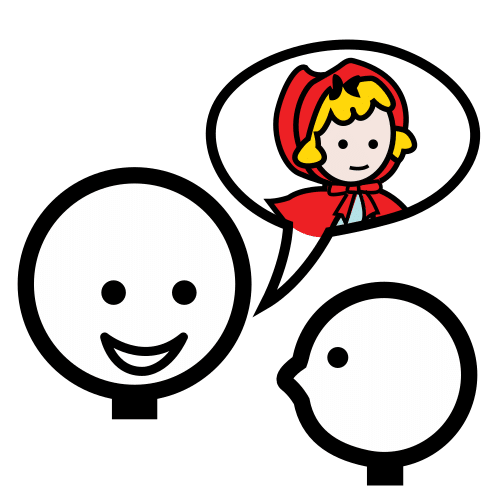
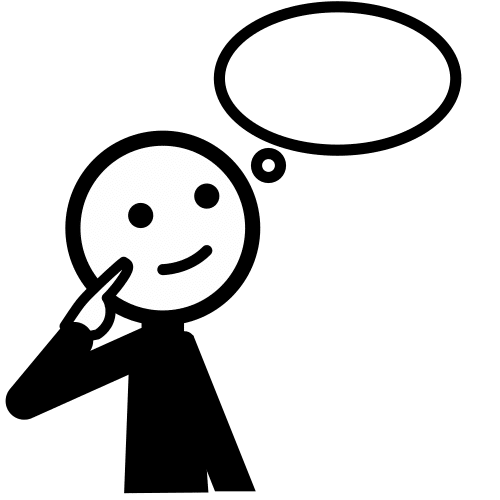
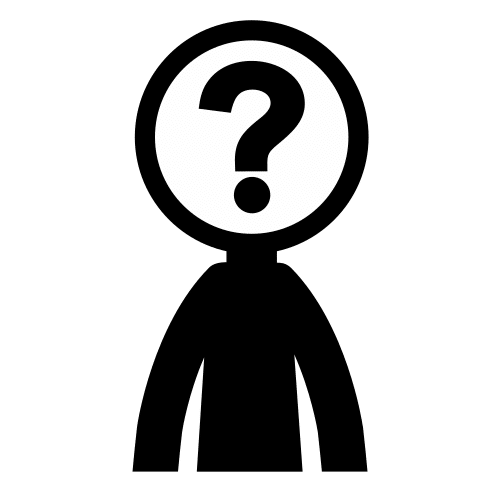

Guía para el docente
Ruleta para contar historias de invierno: cómo modelar, preguntar y ayudar
Las ruletas sortean el personaje, el lugar y el problema. El alumnado inventa lo demás: qué hace y cómo acaba. Así
practica las partes de una historia, que son el inicio, el problema, la solución y el final. Sirve para toda la clase.
Está pensado, además, para el alumnado con trastorno del desarrollo del lenguaje (TDL), con trastorno del espectro del
autismo (TEA) y con discapacidad intelectual.
Una sesión, de 15 a 20 minutos
- Cuenta tú una historia delante de la clase, con las ruletas y la tira.
- Por turnos, alguien gira cada ruleta. Poned las tres cartas en la tira o en el plan.
- Pensad juntos qué hace el personaje. Las ideas para el final ayudan a quien se atasca.
- Cada peque cuenta, dice o escribe la historia en su nivel. En pareja, uno cuenta y el otro escucha.
- Al acabar, alguien dice qué le ha gustado de otra historia. Cada peque rellena su autoevaluación.
Cómo modelar una historia
Modelar es contar en voz alta y decir a la vez lo que piensas. Hazlo con las mismas piezas que van a usar, señalando
cada carta en la tira:
- Giro y pienso«Ha salido un pingüino, una cabaña y "pierde su gorro". Pongo las cartas en la tira».
- 1 · Inicio«Había una vez un pingüino que vivía en una cabaña».
- 2 · Problema«De repente, perdió su gorro. ¡Qué frío tenía en la cabeza! Estaba muy triste».
- 3 · Solución«Lo buscó debajo de la cama y en la nieve. Entonces, tuvo una idea: pedir ayuda a su amiga la foca».
- 4 · Final«Al final, lo encontraron en la cabeza del muñeco de nieve. Y el pingüino se rio mucho».
Usa siempre las mismas palabras para unir. Después, cuéntala otra vez con un error a propósito, como «Había una vez
una cueva…», y deja que te corrijan. Con el tiempo, el modelo lo dan ellos.
Preguntas guía
| Parte |
Preguntas |
| 1 · Inicio | ¿Quién es? ¿Cómo es? ¿Dónde está? ¿Cuándo pasa? |
|---|
| 2 · Problema | ¿Qué le pasa? ¿Cómo se siente? ¿Por qué? |
|---|
| 3 · Solución | ¿Qué hace? ¿Quién le ayuda? ¿Qué pasa después? |
|---|
| 4 · Final | ¿Cómo acaba? ¿Cómo se siente ahora? |
|---|
Si no responde, dale dos opciones: «¿Lo buscó en la cueva o en la playa?». Y espera: cuenta hasta cinco en silencio
antes de ayudar.
TDL: repite bien lo que dice
El trastorno del desarrollo del lenguaje (TDL) es el nombre que recomienda un consenso internacional para las
dificultades del lenguaje que afectan al día a día y no se asocian a otra causa conocida (Bishop y otros, 2017).
Cuando una frase le sale con errores, no le corrijas de forma directa. Repítela bien justo después, con su misma idea,
y sigue con la historia. A esta ayuda se le llama reformulación. Una revisión de estudios con niños y niñas con
dificultades del lenguaje la encontró útil para su gramática, aunque las pruebas aún son limitadas. Sus autores
explican que ayuda que la frase bien dicha llegue justo después de la suya y que no tenga que repetirla (Cleave y
otros, 2015).
Cambia solo una o dos cosas cada vez. Si trabaja con el maestro o la maestra de Audición y Lenguaje (AL), pregúntale
qué formas está aprendiendo y repítelas más.
Con alumnado con TEA
-
Cuenta tú primero, con la misma estructura y las mismas palabras. El modelado y los apoyos visuales están entre
las prácticas con más respaldo para el alumnado con autismo (Hume y otros, 2021).
-
Pregunta qué siente y qué piensa el personaje, y por qué. Enseñar ese lenguaje mejoró las historias de cinco
niños y niñas con autismo de 8 a 12 años (Gillam y otros, 2015).
-
Retira las ayudas poco a poco: primero la tira, después las cartas. Así lo hicieron con tres niños con autismo de
6 a 8 años, que mejoraron sus historias (Petersen y otros, 2014).
- Si el azar le inquieta, que elija las cartas boca arriba. Un problema que le asusta se quita del montón.
Con alumnado con discapacidad intelectual
- Empieza con dos ruletas, quién y dónde, y una frase: «Había una vez un oso en una cueva».
- Usa las cartas boca arriba y dale dos para elegir.
- Contad la misma historia varios días y representadla con muñecos o con objetos.
-
Hay pocos estudios. Con cuatro chicas con síndrome de Down de 10 a 15 años, contar con apoyos visuales fue
viable y los avances fueron pequeños (Finestack y otros, 2017).
- Puede responder señalando o con su sistema de comunicación.
Tres niveles para toda la clase
El Diseño Universal para el Aprendizaje (DUA) propone dar varias formas de expresarse, ayudar a planificar y a revisar
y ajustar el reto y el apoyo (CAST, 2024, consideraciones 5.1, 6.3, 6.4 y 8.2). Todo el grupo juega a lo mismo y cambia
la ayuda. Nivel 1, círculo: lo cuenta con la tira. Nivel 2, cuadrado: tres frases con palabras para unir, dichas,
escritas o dictadas. Nivel 3, rombo: escribe con el plan y revisa con la lista. Proponemos subir de nivel cuando le
salga sin ayuda dos o tres veces seguidas: ajústalo a cada peque.
Escribir: planificar y revisar
En un metaanálisis de estudios de Primaria, enseñar la estructura de los textos, preparar las ideas antes de escribir y
escribir con ayuda de un compañero mejoraron la calidad de los textos (Graham y otros, 2012). Con alumnado con
dificultades de aprendizaje también ayudaron dictar a un adulto y ponerse metas (Gillespie y Graham, 2014). Y en
Primaria, revisar con la opinión del docente, de un compañero o la propia mejoró los textos (Graham, Hebert y Harris,
2015). Por eso la hoja del nivel 3 lleva una lista para revisar y la autoevaluación termina con un reto.
Qué dice el currículo de la Región de Murcia
-
Infantil. Un criterio de evaluación del segundo ciclo es «Evocar y expresar espontáneamente ideas a
través del relato oral» (Decreto 196/2022, pág. 33107). El decreto recuerda que «la adquisición del código escrito no
es un objetivo que se deba alcanzar en esta etapa» (pág. 33099). A los 5 años, la historia se cuenta, se dibuja o se
dicta.
-
Primaria, primer ciclo. Producir textos orales «con planificación acompañada» (criterio 3.1) y
escribir «ajustándose a modelos dados», con estrategias de «planificación, textualización y revisión» (criterio
5.1; Decreto 209/2022, pág. 40015). Entre los saberes están la narración y el plan de escritura (pág. 40017), y los
conectores temporales (pág. 40018).
-
Segundo ciclo. Los mismos criterios, con más autonomía (pág. 40019), y «Revisar y mejorar los
textos propios y ajenos» (criterio 9.2, pág. 40020). Para el decreto, escribir implica planificar a partir de
modelos o pautas, revisar y editar: «Todo ello debe trabajarse en clase» (pág. 40011).
Seguridad
El encuadernador es una pieza pequeña y el punzón pincha. Monta tú las ruletas. Con quien todavía se lleva cosas a la
boca, jugad con las cartas o con un dado grande.
Lo que no sabemos y otros materiales
Estas ruletas, como conjunto, no se han estudiado: juntan apoyos con respaldo. Una revisión de 40 estudios encontró que
las intervenciones para contar historias mejoran cómo las cuenta y cómo las entiende el alumnado de Infantil y
Primaria, y que muchas usan apoyos visuales y enseñan las partes de la historia (Pico y otros, 2021). Lo que no lleva
fuente en esta guía es propuesta de IdEducando. En Infantil de 3 y 4 años, la bandeja 7 del
Rincón de lenguaje de invierno
tiene una ruleta más sencilla. Los
Diálogos para completar trabajan
la conversación con el mismo vocabulario.
Para las familias
Historias de invierno, también en casa
En clase inventamos historias con tres ruletas. Una dice quién es el personaje, otra dónde está y otra qué problema
tiene. Después, cada peque cuenta qué hace el personaje y cómo acaba. Contar historias le ayuda a ordenar sus ideas y
a encontrar palabras para explicarlas.

Cómo jugar en casa
- Elegid tres cosas: quién, dónde y qué pasa. Podéis usar las ideas de abajo o inventar otras.
- Contad la historia con estas palabras: «Había una vez…», «De repente…» y «Al final…».
- Haced preguntas: ¿Cómo se siente? ¿Qué hace? ¿Quién le ayuda?
- Si os apetece, dibujadla o escribidla juntos: él o ella lo dice y vosotros lo escribís.
 Si se equivoca al hablar
Si se equivoca al hablar
Repetid la frase bien, con cariño, y seguid jugando. No hace falta decir «así no se dice» ni pedirle que la repita.
Peque: «El oso se ha caído en el agua y mojó».
Adulto: «¡Oh! El oso se cayó al agua y se mojó. ¿Y qué hizo?».

Ideas para inventar en casa
-

¿Quién?
- el gato de la vecina
- la abuela
- un dragón con frío
- mi peluche
-
¿Dónde?
- en la bañera
- debajo de la cama
- en el ascensor
- en el mercado
-
¿Qué pasa?
- se acaba la leche
- desaparece un calcetín
- llaman a la puerta
- el perro se come las galletas
Ruleta para contar historias de invierno. IdEducando, noviembre de 2026. Licencia CC BY-NC-SA 4.0.
Los símbolos pictográficos utilizados son propiedad del Gobierno de Aragón y han sido creados por Sergio Palao para
ARASAAC (https://arasaac.org), que los distribuye bajo Licencia Creative Commons BY-NC-SA.
 Lista para revisar
Lista para revisar